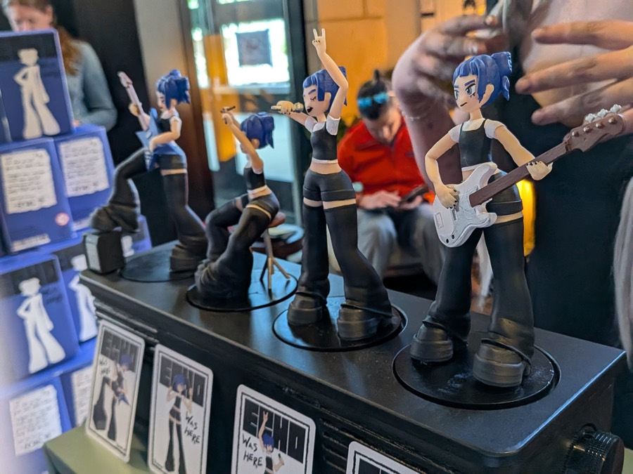
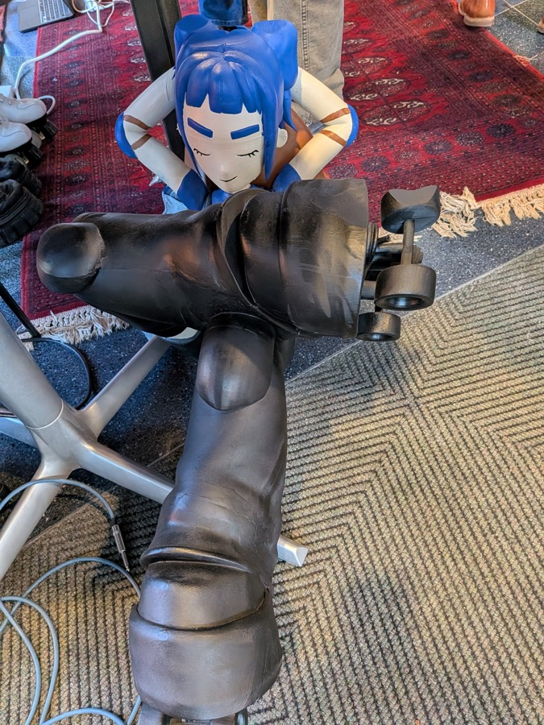
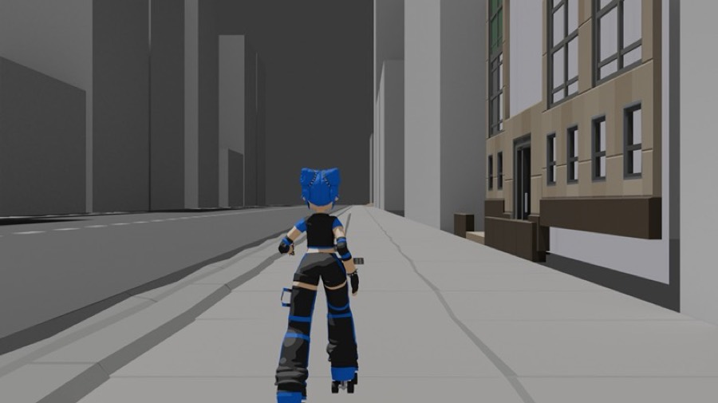
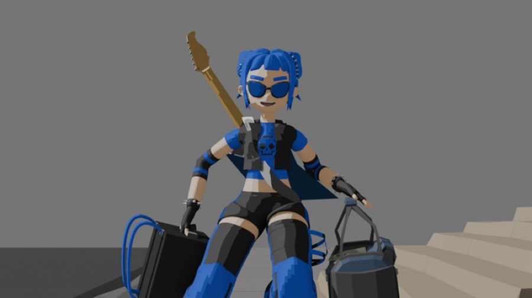
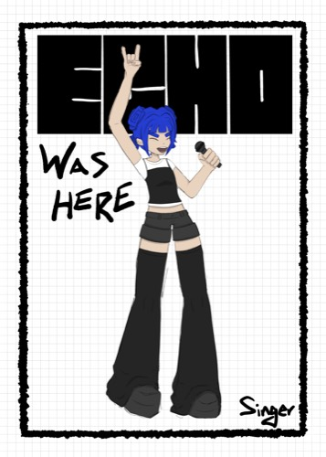
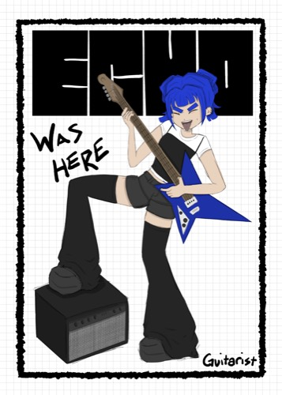
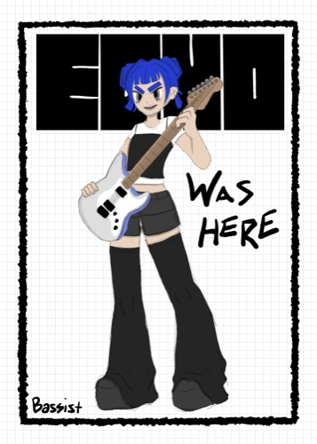
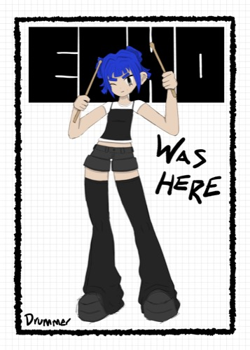
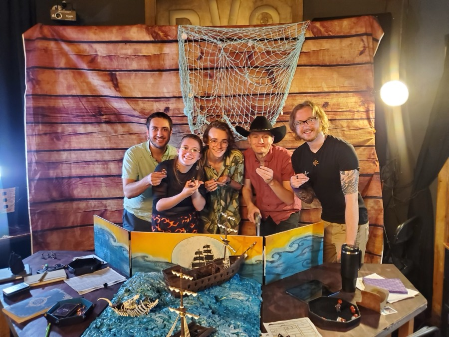
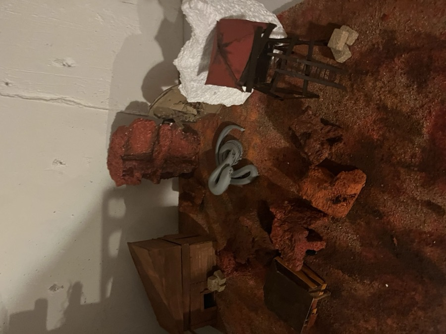

Spec & Sticker
Louder this time, and built with your real work. The type is bigger, photos fan out like on Nite Riot, and each headliner brings its own color. When you move to a project, its color takes over the sticker, the marker notes, the ruler mark and the counter. Everything else stays ink on paper.
Told stories.
Show design.
The center frame would be a looping video for the headliners, using your finished 10–20 second Echo clip. The other projects use your existing photos. The location and clock in the nav are a Nite Riot detail, so tell me where you're actually based.
Echo
was here
drop her on the slot →hear her part


street bg = greybox
Echo fully toon-shaded ✓your 10–20s goes here




Credits on the real page: directed, rigged and animated by Peter Burke · character design, packaging and the song "Breaking In" by Raphaelle Lepere · RFID speaker built by Zeke Thoreson. The real page also gets a section on the EXPO booth, which was dressed as Echo's apartment. That's the strongest themed-entertainment moment in the portfolio.
The Shattered Lands

designed the set+ the whole world

Rule: only one project color is on screen at a time. The home page takes the color of whichever project is active, so the site never looks like a rainbow.
- Try "Flood with project color" at the top of the home mockup and step through the projects. Does it feel like you, or too much? A middle option: flood only for the three featured projects, and keep paper for the archive.
- Shattered Lands: purple or rust? I lean rust. Purple sits close to Echo's blue, so the two headliners would blur together as you slide between them. Rust is the clearest contrast.
- Is it loud enough now? The next step up would be letting the project color flood the whole home background as you slide.
- Which color for Shattered Lands: rust, teal or violet?
- Should Laugh Bucket get a color as a third feature, or stay ink with the archive?
- The figurines in your exhibition photos are painted and finished. Earlier you said you only ended up with the table Echo. Do you mean you don't own a set yourself? Either way, these photos are good enough to lead the case study.
- Where are you based, for the nav location and clock? And do you have a usable photo of yourself, ideally in the workshop or at the table?